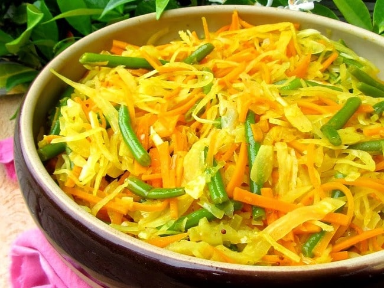

Achard de légumes
The condiment caledonien

Ingrédients
- 150 g de carottes
- 150 g de chou blanc
- 150 g de chouchou (ou christophine)
- 150 g de haricots verts
- 50 g d'oignons
- 25 g de racine de gingembre
- 3 gros piments (facultatif)
- 2 gousses d'ail
- 1 cuillère à café de curcuma en poudre
- 2 cuillères à soupe de vinaigre
- huile
- sel
Préparation
- Laver les légumes. Eplucher les carottes et les chouchous. Couper les gros piments dans le sens de la longueur. Equeuter les haricots verts. Hacher le chou. Tailler tous les légumes en lanières.
- Peler l'ail et la racine de gingembre. Les piler (ou les mixer) avec une cuillère à café de sel.
- Emincer les oignons. Les faire revenir dans de l'huile chaude avec le mélange ail, gingembre pilé et une cuillère à café de curcuma.
- Ajouter alors la julienne de légumes. Terminer la cuisson de suite.
- Et pour finir ajouter le vinaigre. Rectifier l'assaisonnement.